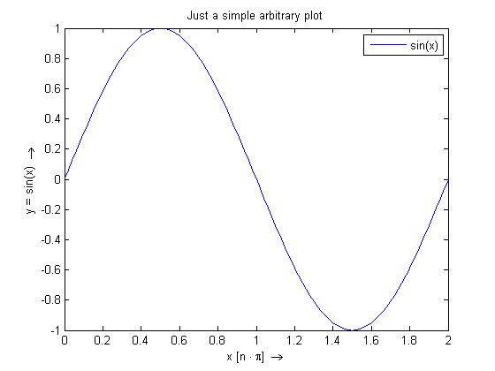
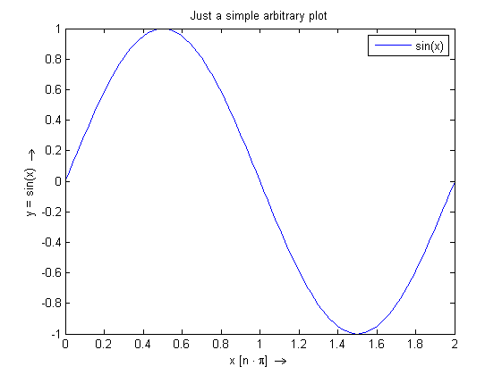

Convenient saving of Matlab figures
A common issue you run into when working with Matlab and the tools provided by OpenEarth is the printing of figures that result from your scripting efforts. Especially when running the same script a number of times, figuring out a new savename for your picture can be a drag.
The printFigure routine is the simplest routine to just quickly save a plot you made without worrying about save location and name.
Contents
generate data to be plotted
x = 0:2*pi/100:2*pi; y = sin(x);
plot data
figure(1) ph = plot(x/pi, y, 'displayname', 'sin(x)');axis tight lh = legend(ph); title('Just a simple arbitrary plot') xlabel('x [n \cdot \pi] \rightarrow') ylabel('y = sin(x) \rightarrow')
save the plot
You may notice that the savename of the figure is derived from the mfilename from which the printFigure call is made.
printFigure
Figure has been saved to <a href="D:\repositories\OpenEarthTools\tutorials\takepicture_Figure.png">D:\repositories\OpenEarthTools\tutorials\takepicture_Figure.png</a>
apply a minor change
For example change the line color from blue to red.
set(ph,'color','r')
save the plot again
You may notice that the savename of the figure has automatically recieved an additional number to ensure the naming stays unique. NB: this option can be disable by setting the 'permission' argument to 'overwrite'. All figures will then be saved using the same name.
printFigure
D:\repositories\OpenEarthTools\tutorials\takepicture_Figure.png already exists Figure has been saved to <a href="D:\repositories\OpenEarthTools\tutorials\takepicture_Figure_1.png">D:\repositories\OpenEarthTools\tutorials\takepicture_Figure_1.png</a>